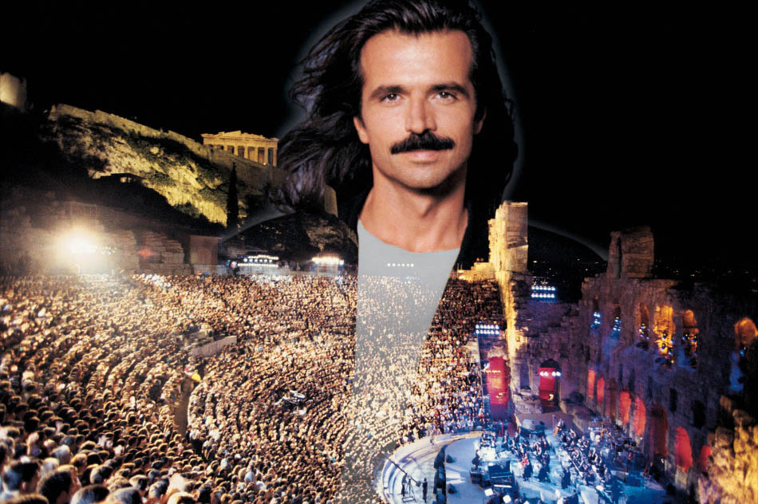

"Everything great that has ever happened to humanity, since the beginning, has begun as a single thought in someone's mind. And if any one of us, is capable of such a great thought, then all of us have the same capacity, capability, because we're all the same."
很难想象，如此赋有世界情怀的话语是来自一位当代音乐人现场独白。1994年，正值艺巅峰状态的Yanni衣锦还乡，在雅典举办了第一场世界巡回音乐会，并在演出结束之前留下了上述结束辞。这段发人深省的独白迎来了在场所有家乡父老雷鸣掌声，并使演出不得不3次返场。这场经典的音乐会连同97年在泰姬玛哈陵和紫禁城的两场巡演，让全世界见证了Yanni在世纪音乐殿堂中神一般的存在，也让New age音乐的风潮席卷全球。
音乐鬼才Yanni被誉为当代最具影响力的作曲大师，他所创作的大量作品在世界范围内广泛传播。不少作品堪称经典，白听不厌。Yanni作品风格跨度之大在音乐界异常罕见。其中有《Santorini》《Tribute》《Adagio in C Minor》这样的交响音诗与交响音画，有《Renegade》《Dance with a stranger》《The rain must fall》《With acttraction》把独奏乐器发挥到极致的现代派作品，也有《Nightingale》《Orchid》《Prelude》这样充满东方神韵和神秘色彩的民族风大作，而《one man's dream》《In the mirror》《Felitsa》则是春风细雨，无限柔情。
初识Yanni，是在97年由cctv3录播的《Tribute》雅尼紫禁城音乐会，作为故宫内举办的第一场现场音乐会，在当时的北京一票难求，可谓盛况空前。观看这档节目的时候，正值寒假的一个夜晚，父亲难得下厨做了一份酱鸭作为夜宵，母亲在一旁对酱鸭的颜色品头论足，我则是一边啃着酱鸭，一边看着电视里那个长头发浓胡子的老外陶醉地舞动着自己的双手，同时操控着六台琴。此情此景给我留下极为深刻的印象。这个夜晚，我不仅记住了父亲做得酱鸭，也从此记住了Yanni那个招牌式的表演动作。若干年后，在和一位大学同学谈起Yanni的演出时，他形象的把Yanni的动作称作八爪鱼弹琴，我觉得这个戏谑称呼分外贴切。于是Yanni在的我心中又多了一个代号：八爪鱼。
在Yanni所有现场演出中，他都是当之无愧的灵魂人物。除了作曲之外，同时还担任配器、乐手、调音师、乐团指挥甚至是报幕员。这样大的角色跨越是难以想象的，Yanni也打开了new age领域贯通台前幕后的先河。在我的印象中，后来看到过的类似音乐人似乎只有日本的喜多郎。
Yanni音乐具有极强的带入性和画面感。听Yanni的音乐，思绪很容易就能被带入到乐曲所要表达的情境之中。乐到伤感处听者随之悲怆，曲到兴奋时闻者随之摇摆。在雅典音乐会的live演出中，最让人觉得最出彩莫过于《The rain must fall》和《Within attraction》。《The rain must fall》中的前段的主旋律由钢琴完成，起初琴声和缓，风和日丽，渐渐地琴声节奏变换，大风刮起，电闪雷鸣。当电贝司solo响起，豆大的雨点开始落下，贝司手的速度越来越快，大雨终于狂泻而下。接着小提琴主旋律排闼而入，犹如在暴风雨中突然闯入了一位狂奔的少年，迎着狂风艰难奔跑。一番搏斗之后，大雨骤停，乐曲戈然而止。听毕全曲，仿佛亲身经历了一场狂风骤雨，惊心动魄。 而乐曲《Within Attraction》则仿佛描绘了一对苦情眷侣。前段小提琴合奏轻快而欢乐，正如情侣相识后自由而甜蜜的时光。突然一段手鼓响起，打破了欢快宁谧的氛围，就像世俗的质疑和家族的阻扰将这对恋人硬生生打散 。从第5分22秒开始，乐曲进入了长达三分钟的华采乐段。乐段以舒缓的小提琴声开始，如同恋人冲破万难终于偷偷得见，楠楠耳语。随后两把小提琴相互哭诉，百转千回，在经历了一番痛苦挣扎之后，两人终于决定逃离世俗束缚，双宿双飞，全曲也在此时达到了最高潮。这段华采高潮迭起，几乎呈现了小提琴演奏的所有技法，连顿弓，跳弓，断奏，拨弦连番伺候。小提琴演奏家Karen briggs和Shardad Rohani的这段演绎，呈现给大家的不仅是美妙的音乐，更有丰富的面部表情和肢体语言。诙谐的斗琴画面谑而不虐，在全曲结束时琴手互献飞吻的画面也成为了Yanni所有live的solo中最为经典的一幕。 听这两首曲子，就像品尝两道麻辣大餐，浓郁辛辣，酣畅淋漓。
2011年10月，雅尼再度来到中国，并在北京五棵松拉开了世界巡演中国站的帷幕。我有幸在第一时间赶赴现场聆听了这场音乐会。此时的Yanni，那标志性的胡须已经不再，样貌也明显苍老，但没有改变的是他的音乐，依旧能带给人们的冲击和遐想。与15年前紫禁城那场相比，这次音乐会的规模和编制虽然大为缩减，但新的配器方式同样带给了人们震撼和惊喜，听感明显回归到了Yanni专辑中的那种电子风格。在演出现场，《Within attraction》被再次演绎，配器不同，乐手不同，一切都是那么熟悉而新颖。担纲小提琴首席的亚美尼亚提琴手Samvel Yervinyan，把个人擅长的中东音乐元素融入其中，呈现出独特的味道，律动更为硬朗。很容易让人联想到他06年和日本裔女提琴手Sayaka·Katsuki在拉斯维加斯的那场珠联璧合的表演。
有人用新古典主义来形容Yanni音乐，而我认为Yanni的作品更具有浓厚的后浪漫主义色彩，颠覆传统，却不离经叛道。不论是古典音乐的死忠，还是现代派铁杆乐迷，都能从中汲取的自己最为需要的音乐养分。这种冲破藩篱、不拘于形式的多元特征，正是Yanni作品的魅力所在。关注Yanni音乐的朋友很容易发现，他的同一首作品在不同音乐会上会表现出极大的风格差异。究其原因就是Yanni给了每一位solo乐手充分的发挥空间。这从他的爵士乐作品《Dance with a stranger》上能够得到很好体现。 这首《Dance with a stranger》曾经在1995年的皇家阿尔伯特音乐厅和1997年紫禁城音乐会上都有演绎。Yanni选择小号家族中的新晋乐器富鲁格号作为演奏主角，音色较小号更为柔和，更加体现出了爵士音乐的柔美。在阿尔伯特音乐会上，担任号手的是美国爵士小号演奏家Raymond Harry Brown。这位黑人爵士乐手演奏风格自由，在演奏中他加入了大量的即兴表演，浓郁的黑爵士风扑面而来，呈现出迷人的梦幻色彩。 而紫禁城音乐会的版本则是由小号演奏家Luis Aquino呈现，作为一名长期在录音室中从事唱片录制的乐手，他的表演更倾向于平稳，连音、吐音清晰明快，整体风格中规中矩。 值得一提的是，富鲁格号自从诞生以来很少作为独奏乐器使用，它以主角身份出现在舞台上还是上世纪90年代以后的事情，当代最著名的小号演奏家纳卡里亚科夫对这门乐器推崇备至，他也是富鲁格号在爵士乐领域最重要的推广人。Yanni...
（未完结）